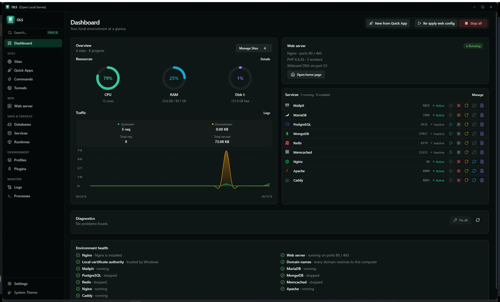
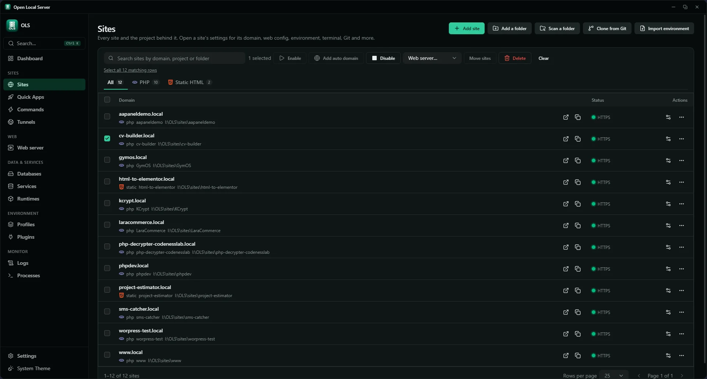
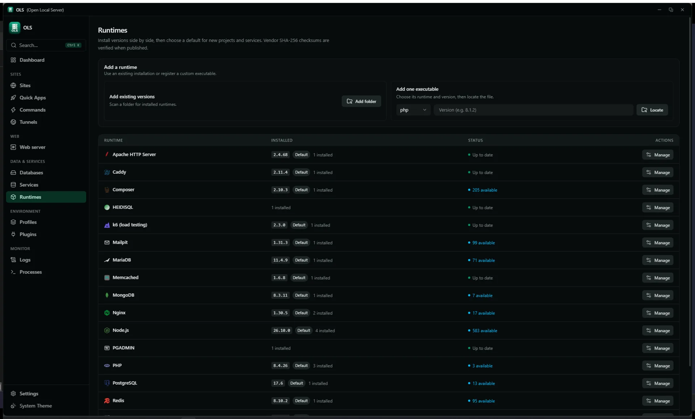
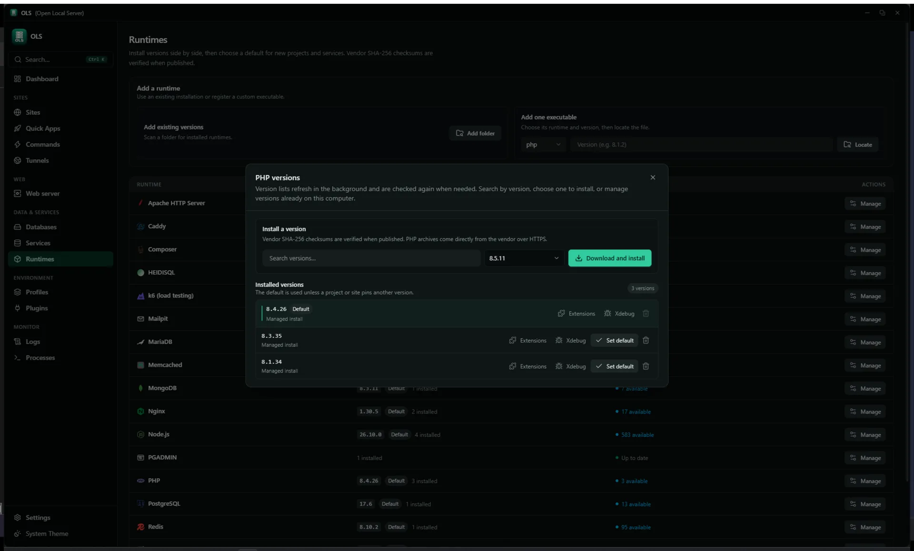
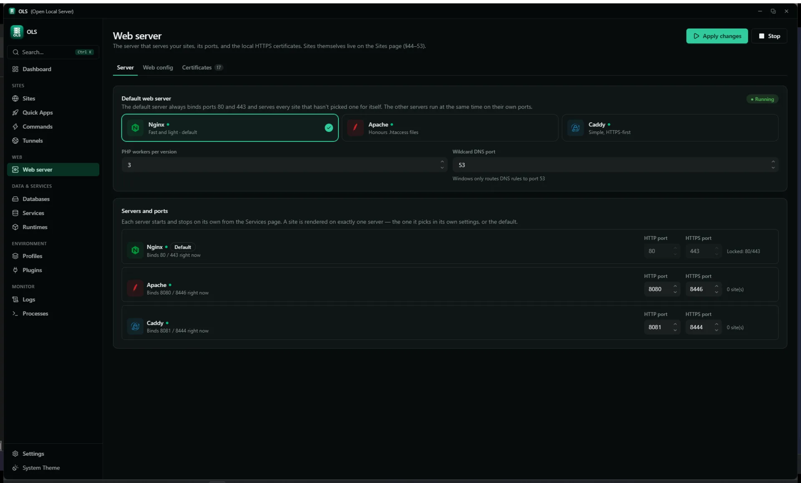
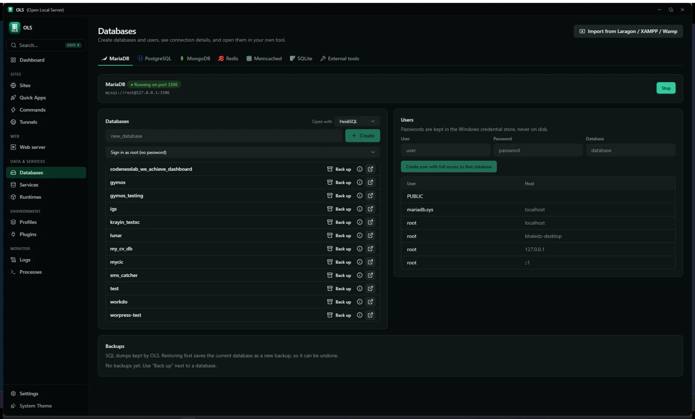
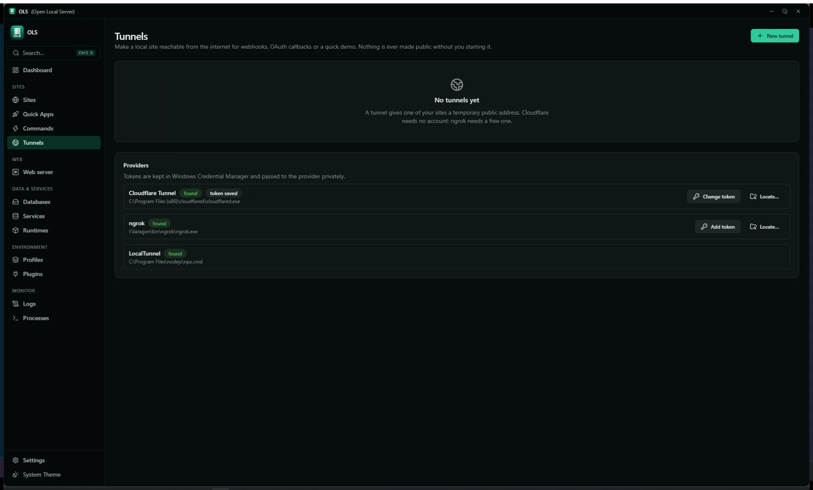

Open Local Server is a local development environment manager for
Windows. It installs and supervises runtimes, gives every project its
own .test domain with trusted HTTPS, and keeps databases,
mail and caches behind one core engine.
Windows 10 / 11, 64-bit. OLS-2.4.0-setup.exe, a
portable zip,
and SHA-256 sums
to check either against. Source on
GitHub.
v2.4.0
GPL-3.0-only
Rust core · Tauri 2 shell
GUI · CLI · API · MCP
OLS — Dashboard

What is this
One environment per project, without hand-editing your machine
Other local stacks give you one PHP, one database and one shared web
root, and the next project that needs a different PHP version changes
it for everybody.
OLS keeps one environment per project instead. Multiple
runtimes sit side by side, a version is pinned to the project that needs
it, and the web server configuration, the database, the certificate and
the domain registration are all done for you.
Every error it shows is a Diagnostic — what broke, why, and
how to fix it. It never overwrites configuration you edited by hand:
generated files are tracked, drift is detected, and history keeps a diff
and a restore for every change.
Desktop app
React 19 · Tauri 2
Command line
olsc setup · doctor · status
Local HTTP API
127.0.0.1:7420 · bearer token
MCP Server
ols-mcp · stdio for Claude & Cursor
All four send the same CoreCommand JSON to
ols-core. The CLI and MCP server drive the running app, or communicate through the local control channel.
Key features
Everything a local environment needs, with native AI MCP control
Runtimes, sites, databases, trusted HTTPS, and a built-in Model Context Protocol server for AI coding assistants.
Runtimes & toolchain
Side-by-side versions per runtime, with a default for new projects
that a project can override.
PHP NTS 8.1–8.5 and Node 22/24 side by side, plus Composer, portable Git and k6
Python support: detects system Python (3.7–3.15) and local virtual environments (.venv, venv)
Bring your own: scan any folder for existing installs, or locate one executable
Per-version extensions, Xdebug and PECL; corepack for npm, pnpm and yarn
Downloads verified against vendor SHA-256; plugins can add more runtimes
Model Context Protocol (MCP)
Let AI coding assistants control and configure your local stack.
Native stdio MCP server (ols-mcp.exe) shipped directly in the installer
Direct integration with Claude Desktop, Cursor, VS Code, LM Studio, and AGY
Tools to inspect site folders, detect frameworks & venvs, and create domains
Manage services, query database tables, and run SQL queries through natural language
Sites & trusted HTTPS
Every project gets its own domain and a certificate Windows already
trusts.
Any domain plus wildcard subdomains; automatic <folder>.test resolution
Automatic welcome page (HTML or PHP info) generated if document root has no index
On-device CA, 397-day leaf certificates, auto-renew under 30 days left
Multi-interface binding (0.0.0.0) for LAN access and router port forwarding
Site logos and icons with custom WebP uploads and offline Font Awesome catalog
Web servers
Three engines, generated configuration, and a history that shows every
diff.
Nginx 1.28, Apache 2.4 and Caddy 2.11 — switch a site with one click
Managed, Advanced and Manual modes; validate before reload, roll back on failure
Drift detection plus config history with diff and restore
Reverse proxy to any local or remote host and port
Databases & SQL tools
Engines, users, backups, and built-in database inspection tools.
Queue workers, cron scheduler with no overlapping runs, and portable-pty terminals
Product tour
The app, as it runs
Screenshots captured from the running desktop app in its dark theme.
Nothing on this page is a mock-up.
Dashboard
DashboardSites and projects counted, resource rings, a traffic graph built from the access log, all nine services with their ports, and diagnostics. Unavailable services are shown flat grey rather than looking clickable.
Sites

SitesOne table for sites and projects. Tick rows and the bulk bar appears — enable, disable, add auto domains, move them to another web server, or delete — and a batch reports what changed and what it skipped. Each row's own settings open its web config, servers, terminal, .env, Git, workers, snapshots, repair and load testing.
Runtimes

RuntimesEvery runtime with its installed versions, a default badge and a manage action — plus the two ways to bring your own: scan a folder, or locate a single executable.
Runtimes — PHP versions

Version managerPer runtime: search the vendor catalog, download and install, then manage extensions, Xdebug and the default for each installed version. SHA-256 is checked when the vendor publishes it.
Web server

Web serverEngine choice, ports and ownership mode. The config is validated before the reload, rolled back if it fails, and compared against what is on disk so hand edits surface as drift instead of being overwritten.
Databases

DatabasesEngines, databases and users with the connection details to paste. Backup takes a safety copy first; SQLite runs .backup and an integrity check. Databases from other common Windows stacks import live, without a dump file.
Tunnels

TunnelsNothing is made public without starting it and confirming the exposure. Provider binaries are found on PATH or in a known location rather than installed for you; tokens stay in Windows Credential Manager.
Getting started
Four steps, all inside the app
Everything below is done in the desktop app. The command line is
optional and there is a section below for it, because most of the work
is not terminal work.
Install the app
Run the downloaded OLS-2.4.0-setup.exe and open OLS.
Windows 10 or 11, 64-bit.
Install a runtime
Open Runtimes and install a PHP version, plus Node or Python if
you use them. Checksums are verified on download.
Point a site at it
Open Sites, add a project folder and give it a domain.
.test names resolve without editing the hosts file.
Apply and trust
Apply the web config and trust the local certificate authority once,
so HTTPS sites stop warning.
Command line (olsc) & AI (ols-mcp)
The install folder (C:\OLS) holds OLS.exe (the app),
olsc.exe (the command line), and ols-mcp.exe (the MCP
server for AI assistants). (olsc rather than ols because
Windows does not tell file names apart by case: the app is
OLS.exe, so anything called ols finds the app
and opens a window instead of running a command.) The installer does not
add that folder to your PATH, which is why olsc
can come back as "not recognised". Pick whichever of these suits you:
Add the folder to PATH — Windows Settings → System → About →
Advanced system settings → Environment Variables, add
C:\OLS under Path, then open a new
terminal. olsc status works from there on.
Call it by its full path — no change to the machine:
C:\OLS\olsc.exe status
olsc and ols-mcp talk to the app while it is open and communicate through the local control channel, so they behave consistently.
Everyday commands
olsc
olsc status # services, sites, runtimesolsc start # start every enabled serviceolsc stop # stop everythingolsc doctor # problems as Problem / Cause / Fixolsc project list # registered projectsolsc service list # MariaDB, Postgres, Redis, Mailpit…olsc runtime list # installed PHP and Node versionsolsc tunnel start --provider cloudflared --port 443
olsc worker run --queue default
olsc snapshot create --name"before-upgrade"olsc search "mailpit"
A project, end to end
PowerShell
# Clone any PHP / Node / Python projectgit clone https://github.com/example/my-laravel-app.git
cd my-laravel-app
# Runtimes, database, domain, DNS, SSL, mail, workersolsc setup
# Preview the plan without applying itolsc setup --dry-run# Health, then safe fixesolsc doctor
olsc repair
Build from source
For working on OLS itself. Nothing in the four steps above needs this.
# Tauri + Vite + Rust core, with hot reload
.\scripts\dev.bat
# Quality gatescargo fmt --all
cargo clippy -p ols-core -p ols-helper --all-targets
cargo test -p ols-core -p ols-helper
cd ui; npm run lint; npm run build
cd ..
# NSIS / MSI bundlecargo tauri build
For developers
One core, four front doors
ols-core is a single CoreCommand dispatcher over
shared state. The GUI, the CLI, the HTTP API, and the MCP server are four front doors onto
the same managers — there is no second implementation of anything.
Plugins are declarative: a plugin.yaml checked against a
schema, contributing runtimes, Quick App recipes, project detections
or health checks. A plugin stays off until you approve exactly the
permissions it lists, and remote catalogs are minisign-signed and
re-verified on every load.
ProblemPort 3306 is already used by mysqld.exe (PID 4120).
CauseA second MariaDB data folder is running from an older install.
Fixolsc repair stops the orphan and reassigns the port. Review the plan, then apply.
Open source
GPL-3.0-only, and the specs are in the repository
OLS keeps specs/ as its source of truth for architecture,
modules, data models and API. A pull request that changes behaviour
without updating the matching spec is rejected in review — so the
documentation cannot drift away from the code.
Reports and discussions go to the issue tracker. Security issues follow
the published policy rather than a public issue.